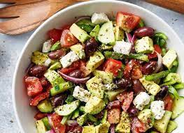

Avocado salade met feta

Ingredienten
- 2 avocado's
- 75 gr feta
- 10 cherry tomaatjes
- 1 kleine rode ui
- 2 tl citroensap
- 1 el olijfolie
- 1 tl oregano
- snuf peper
- verse peterselie
Bereiding
- Snijd de cherrytomaatjes in vieren, de feta in kleine blokjes en snipper de rode ui.
- Snijd de avocado als laatste in kleine blokjes en besprenkel met een klein beetje citroensap (circa 1 tl).
- Doe de gesneden ingrediënten in een mooie schaal.
- Doe dan de kruiden erbij samen met nog een theelepel citroensap en een eetlepel olijfolie.
- Even mengen en klaar.